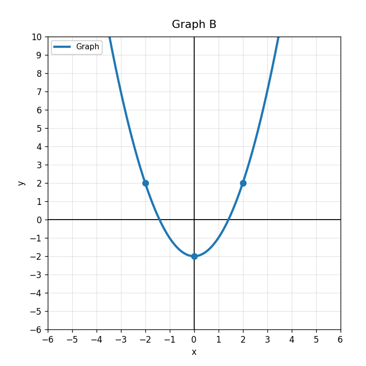
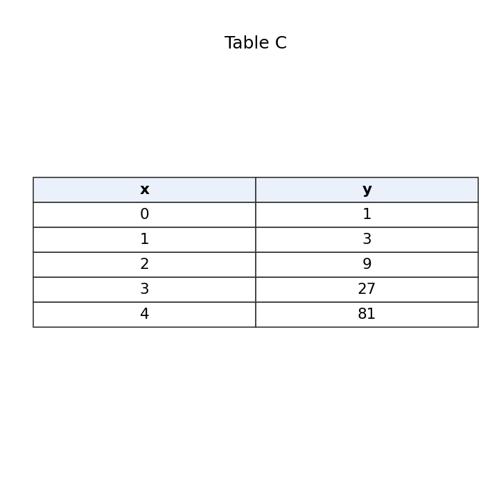
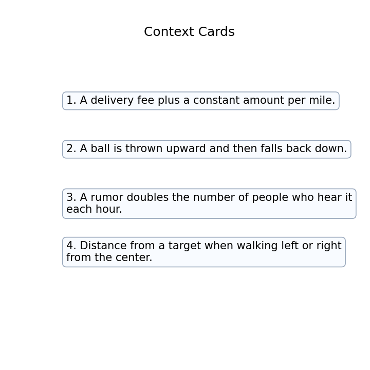

Use the graph. Name the function family and describe one visible feature that helped you decide.

Classify the equation as linear, quadratic, absolute value, exponential, square-root, or rational.
$$y=2x+5$$
Use Table C. Decide which family it most likely represents and explain what happens to the outputs.

Match each context card to a likely function family. Give one reason for each match.

What does the feasible region represent in a system of inequalities?
How many inequalities are in the system?
$$y\ge x+1$$
$$y\le -x+9$$
What should you substitute into each inequality to test whether $(3,4)$ is feasible?
Why does a system of inequalities usually have more than one boundary line?
Determine whether $(2,6)$ satisfies both inequalities.
$$y\ge x+2$$
$$y\le -2x+12$$
A point satisfies the budget constraint but not the minimum requirement. Is it feasible? Explain.
A student says, “If a point is in one shaded region, it is automatically a solution to the system.” Critique the statement.
Create two inequalities that could represent a budget limit and a minimum quantity requirement. Define your variables.
For $y<3x-2$, should the boundary line be solid or dashed?
For $y\ge -x+4$, should the solution region be above or below the boundary line?
Check whether $(0,0)$ satisfies $y\le 2x+1$.
Write an inequality with a solid boundary line and shading below.